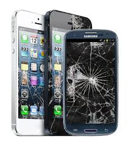

| 
| O primeiro passo (depois de chorar) é avaliar o estrago. É importante perceber se foi apenas a tela/vidro que trincou e o prejuízo é apenas estético, ou se o celular está apresentando algum problema de funcionamento.
Uma queda pode causar além da quebra do vidro, problemas com o sistema de touch screen, que é o que faz o celular perceber o local da tela que o usuário está pressionando e selecionando. Use diversos aplicativos e veja se você está conseguindo utilizá-lo normalmente, se sim, menos mal.
A queda também pode causar algum problema nas placas internas do aparelho. Um celular é como um computador, composto de vária pequenas peças integradas, e com a queda alguma dessas peças pode quebrar, se descolar e etc. Isso pode causar problemas como travamentos, problemas com os arquivos e fotos armazenados e até o não funcionamento do aparelho.
Uma vez que a tela está quebrada, é importante também aumentar a proteção do aparelho para não piorar a situação. Como em um vidro de carro, uma vez que a tela está trincada, ela está mais vulnerável e as rachaduras tendem a crescer com qualquer pequeno impacto ou torção. Coloque o celular um capa ou case de proteção. |